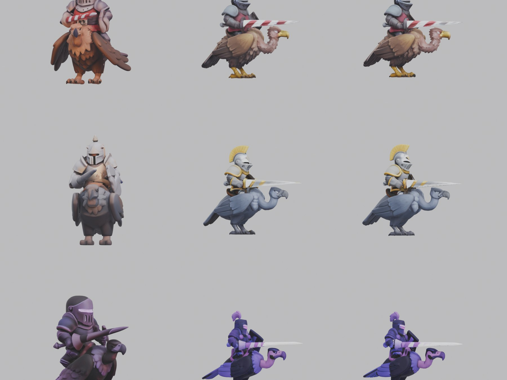
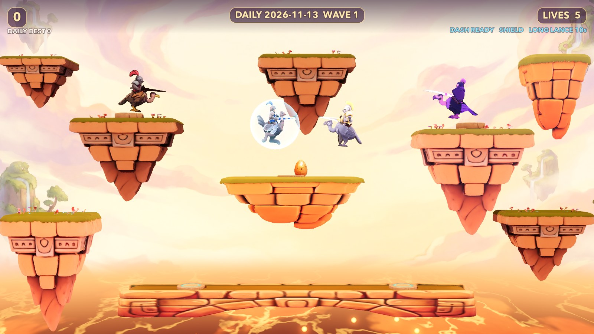

High Lances Over Molten Skies
Skyjoust reimagines single-screen mounted aerial combat with hand-painted 3D miniatures, hinged two-segment feathered wings, an air-dash tie-breaker, volcanic hazards, and three distinct modes — from intense wave survival to hazard-free Peaceful Flight.
Independent open-source tribute inspired by Williams Electronics' 1982 arcade classic Joust. Not affiliated with or endorsed by Williams Electronics or Warner Bros. Entertainment.
Interactive 3D Miniature Hangar
Drag to orbit, scroll or pinch to zoom, and inspect every knight, mount, hazard, and carved ledge
shipped in the game. Web previews use matte Principled BSDF materials matching Godot's ModelFit.matte().
Player — Ostrich Knight

Solving Foreshortened Lances: Batch 1 vs. Octree-512 V2
In a side-view jousting game, lance silhouette is gameplay truth. Our first image-to-3D pass (left column, front-angled 3/4 concepts at octree 384) foreshortened forward-pointing lances into stubby nubs and fused knight torsos into bird necks (scoring 3.0–4.5/10).
Re-generating from strict right-facing side-profile concepts with clear negative space above the mount's head at octree 512 / 80,000 faces across multi-seed candidates (center & right columns) raised Bounder, Hunter, and Shadowlord silhouettes to 9.0–9.5/10.
Four Dynamic Sky-Island Arenas
Every 4 waves (or every 10 golden eggs in Peaceful Flight), Skyjoust transitions backdrops, directional sun key, ambient energy, and custom FBM lava horizon-fog uniforms.

Sunset Isles
Zero-Sample FFmpeg Synthesized SFX Board
Every whoosh, metallic lance clash, egg chime, and volcanic sizzle is generated deterministically from
ffmpeg -f lavfi filtergraphs in tools/make_sfx.sh. Click any pad to audition.
Active Filtergraph Recipe
# Click any pad on the left to hear the synthesized MP3 # and inspect its exact FFmpeg lavfi expression. # Seamless 20s volcanic rumble (zero loop dropout): anoisesrc=d=22:c=brown:a=0.5 -> lowpass=130 -> acrossfade=d=2
Modes, Lance Mathematics & Controls
All movement and collisions run in a deterministic 60 Hz 2D coordinate plane (x in [-15, 15))
with separate gameplay and visual RNG streams so headless endurance tests match live play frame-for-frame.
Three Playable Modes
| Mode | Start | Rules |
|---|---|---|
| Classic Arcade | SPACE | 5 lives, extra life every 20,000 pts, escalating waves, Egg Waves every 5th, Troll Hand (W3+), Crumbling Ledges (W6+). |
| Daily Challenge | C | Deterministic YYYYMMDD seed so every run that day faces the exact same wave spawns and drops; isolated daily best score. |
| Peaceful Flight | F | Zero enemies or hazards; molten lava gently updrafts you skyward with golden sparks while you gather eggs across all 4 arenas. |
Joust Resolution Equation (rider.gd / main.gd)
diff = player.lance_y() - enemy.lance_y()
+ (0.50 if long_lance > 0.0 else 0.0)
+ (0.20 if player.dashing() else 0.0)
# diff > +0.22 -> Enemy unmounted (+500..1500, egg drops)
# |diff| <= 0.22 -> Metallic lance clash & wrap-safe rebound
# diff < -0.22 -> Shield breaks (if active) or life lost
Keyboard & Gamepad Controls
| Action | Keyboard | Gamepad |
|---|---|---|
| Run & Air Steer | A / D or Arrows | Left Stick / D-Pad |
| Wing Flap | SPACE / W / Up | South (A / Cross) |
| Air-Dash Lunge | SHIFT / J | West (X) / RB |
| Pause / Quit to Title | ESC or P (then Q) | — |
| Help & Rules Card | H or F1 | — |
| Music (off default) / Mute | M / N | — |
Run Locally & Execute the 30-Check Test Suite
Requires Godot Engine 4.7+ (Forward+). Everything needed to play —
textured GLBs, hinged wings, shaders, backdrops, and synthesized audio — is committed in game/.
Play Interactive or Build macOS .app
git clone https://github.com/charles-forsyth/skyjoust.git cd skyjoust # Launch directly in Godot 4.7+ godot --path game # Optional: build ~/Games/Skyjoust/Skyjoust.app on macOS ./tools/build_mac_app.sh open ~/Games/Skyjoust/Skyjoust.app
Headless Regression & 20-Minute Endurance Sim
# 28-check regression suite (0 warnings, 0 resource leaks) godot --headless --path game -s res://tests/test_all.gd # Hazard unit suites godot --headless --path game -s res://tests/tests_hand.gd godot --headless --path game -s res://tests/tests_crumble.gd # Simulate 20 minutes of 60 Hz autopilot play in ~4 seconds godot --headless --path game -- --sim=1200